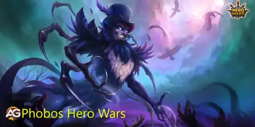
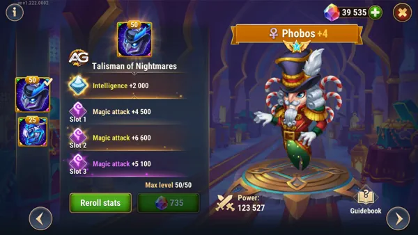
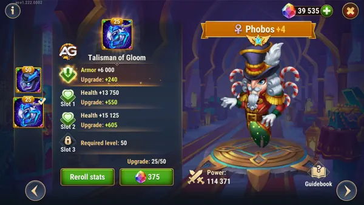

Fobos destaca-se como um mestre da interrupção em Hero Wars Alliance, conhecido por sua habilidade de contrariar equipes focadas em magos e manipular a energia inimiga. Com habilidades versáteis e aplicação estratégica, ele se sobressai em quebrar formações e criar oportunidades para sua equipe dominar no campo de batalha.

Ilustração de Fobos, um personagem do jogo Hero Wars Alliance, desenvolvido pela Nexters.
Tabela: Fobos Principais Estatísticas
Principais Atributos
Detalhes
Posição:
Linha de Fundo
Função:
Mago, Controle
Estatísticas principal:
Inteligência
Facção:
Eternidade
Como conseguir:
Eventos, baú heroico, Campanha
Tabela: Fobos Tier List Geral
Tier List 2024
Ranque
Tier List Geral:
S
Tier List de Hidra:
A+
Dominando Fobos: Um Guia Completo de Estratégia em Hero Wars Alliance
Introdução ao Fobos
Fobos, um herói proeminente da facção Eternidade, possui habilidades formidáveis que o tornam uma força a ser reconhecida no campo de batalha. Seu conjunto de habilidades gira em torno de infligir danos mágicos significativos enquanto interrompe o fluxo de energia dos magos inimigos. Neste guia, exploraremos várias estratégias para utilizar Fobos de forma eficaz em Hero Wars Alliance.
Compreendendo as Habilidades de Fobos
Dano Mágico: Fobos é renomado por sua capacidade de desencadear danos mágicos devastadores contra seus inimigos. Sua habilidade primária causa um grande impacto, infligindo danos substanciais às unidades inimigas.
Neutralização de Energia: Uma das características únicas de Fobos é sua capacidade de neutralizar a energia dos magos inimigos, impedindo-os de lançar seus feitiços poderosos. Além disso, ele pode absorver essa energia, reabastecendo suas próprias reservas e fortalecendo-se no processo.
Perfuração Mágica: Fobos possui altos níveis de perfuração mágica, o que lhe permite contornar a resistência mágica do inimigo e infligir danos significativos mesmo em oponentes altamente blindados.
Aplicações Estratégicas de Fobos
Contrapor Equipes de Magos: Fobos brilha especialmente quando confrontado com equipes altamente dependentes de danos mágicos. Sua capacidade de neutralizar a energia dos magos inimigos interrompe seu ritmo, tornando-os ineficazes em lançar seus feitiços devastadores. Além disso, o próprio poder mágico de Fobos garante que ele possa infligir danos substanciais a essas composições ricas em magos.
Gestão de Energia: Em batalhas onde a gestão de energia é crucial, Fobos se mostra um ativo inestimável. Ao neutralizar a energia dos magos inimigos e absorvê-la para si mesmo, ele não apenas incapacita as capacidades ofensivas da equipe adversária, mas também fortalece as suas próprias, permitindo-lhe desencadear uma série de feitiços poderosos sem impedimentos.
Distribuidor de Dano Individual: Devido aos seus altos danos mágicos e perfuração, Fobos é capaz de atuar como um distribuidor de dano individual em certas composições de equipe. Sua autossuficiência em infligir danos o torna uma escolha atraente para equipes que procuram diversificar suas fontes de dano ou que não possuem outras opções fortes de causadores de dano.
Versatilidade em Composições de Equipe: A versatilidade de Fobos permite que ele se encaixe em uma ampla gama de composições de equipe. Seja combinado com outros magos para amplificar seu poder de dano ou integrado em equipes com composições diversas, Fobos se adapta bem a várias estratégias e estilos de jogo.
Guia do Talismã de Fobos
Talismã dos Pesadelos de Fobos (Primeiro Talismã)
Benefícios:
Inteligência: Aumenta diretamente o poder mágico de Fobos.
Ataque Mágico: Possui três slots, cada um fornecendo até 6.600 de ataque mágico, totalizando 19.800 de ataque mágico quando totalmente maximizado.
Defesa Mágica: Aumenta a resistência contra equipes de dano mágico.
Taxa de Recuperação de Energia (TR): Acelera a recuperação de energia para ativação mais rápida de habilidades.
Tabela: Estatísticas do Talismã dos Pesadelos de Fobos
Slot
Estatísticas
Pontos
0
Inteligência
+2000
1
Ataque Mágico
+6600
2
Ataque Mágico
+6600
3
Ataque Mágico
+6600

Fobos com o Talismã dos Pesadelos, Hero Wars.
Desempenho:
As habilidades de dano de Fobos escalam com 300% de seu ataque mágico, tornando este Talismã uma excelente escolha para maximizar seu potencial ofensivo. Ele se torna um pesadelo para os inimigos, especialmente ao enfrentar oponentes com alto ataque mágico.
Talismã da Melancolia (Segundo Talismã)
Benefícios:
Armadura: Melhora a resistência física, enfrentando uma das principais vulnerabilidades de Fobos como mago.
Vida: Proporciona maior sobrevivência ao aumentar o HP máximo.

Fobos com o Talismã da Melancolia, Hero Wars.
Desempenho:
Este Talismã é mais defensivo, ideal para tornar Fobos mais durável contra equipes de dano físico. Embora sacrifique o potencial de dano em comparação ao Talismã dos Pesadelos, ele garante que Fobos possa resistir em combates prolongados, especialmente contra equipes inimigas focadas em dano físico.
Qual Talismã Você Deve Escolher para Fobos?
Para Dano: O Talismã dos Pesadelos é a melhor opção. Sua alta escala de ataque mágico garante que Fobos possa devastar inimigos com suas habilidades, especialmente aqueles que dependem de ataque mágico.
Para Sobrevivência: O Talismã da Melancolia é mais adequado para configurações defensivas, particularmente contra equipes com alto dano físico.
Contudo, lembre-se de que optar pelo Talismã defensivo reduzirá significativamente o dano de Fobos, como acontece em casos semelhantes com heróis como Keira com o Talismã da Coragem. Se o objetivo for maximizar o dano, o Talismã dos Pesadelos continua sendo a escolha ideal.
Pontos Positivos e Negativos
Pontos Positivos
Counter de Magos
Transferir a energia do Mago mais forte para si
Artefato de Defesa mágica
Bastante ataque magico
Boa perfuração magica
Pontos Negativos
Pouca vida
Fraco contra times de ataque físico
Prioridades de Evolução para Fobos
Ao evoluir Fobos em Hero Wars Alliance, é importante priorizar certos atributos para maximizar sua eficácia em combate. Abaixo estão as prioridades de evolução recomendadas, acompanhadas de exemplos e tabelas para facilitar o entendimento.
less
Copy code
Glifos
Os glifos são uma parte essencial da evolução de Fobos, fornecendo bônus significativos aos seus atributos. Aqui estão as prioridades de evolução para os glifos:
Prioridades de Evolução para Glifos
1. Vida
2. Ataque Mágico
3. Inteligência
4. Defesa Mágica
5. Armadura
Artefatos
Os artefatos desempenham um papel crucial no fortalecimento de Fobos. Aqui estão as prioridades de evolução para os artefatos:
Prioridades de Evolução para Artefatos
1. Livro
2. Anel
3. Arma (Defesa Mágica)
Visuais
Os visuais de Fobos não apenas adicionam estilo, mas também oferecem benefícios adicionais. Aqui estão as prioridades de evolução para os visuais:
Prioridades de Evolução para Visuais
1. Perfuração Mágica
2. Ataque Mágico
3. Inteligência
4. Armadura
5. Defesa Mágica
Fobos com visual de inverno, Hero Wars Mobile.
Fobos vs Hidras: Um Guia Estratégico
Fobos, quando utilizado estrategicamente, pode ser um ativo valioso em batalhas contra hidras em Hero Wars Alliance. Sua sinergia com certos heróis, especialmente Mojo, pode aumentar significativamente a eficácia da sua equipe ao combater esses formidáveis inimigos. Abaixo está um guia detalhado sobre como usar Fobos efetivamente contra hidras, juntamente com composições de equipe sugeridas.
Utilizando Fobos Contra Hidras
A capacidade de Fobos de causar dano mágico consistente por segundo o torna uma escolha potente para batalhas contra hidras. Quando combinado com Mojo, cuja 4ª habilidade, Encantadora, causa dano contínuo, a produção de dano de Fobos é ainda mais amplificada, criando uma combinação mortal contra hidras.
Sugestões de Equipe de Fobos para Hidras
Aqui estão algumas composições de equipe recomendadas com Fobos para enfrentar diferentes tipos de hidras:
Hidra de Fogo:
Thea
Fobos
Mojo
Jhu
Astaroth
Hidra de Vento:
Martha
Fobos
Mojo
Jhu
Andvari
Ao incorporar Fobos em suas composições de equipe para enfrentar hidras e utilizar estrategicamente suas habilidades ao lado de heróis complementares como Mojo, você pode melhorar significativamente suas chances de sair vitorioso nesses desafiantes encontros.
Em conclusão, Fobos emerge como um herói formidável no universo de Hero Wars Alliance, reconhecido por sua capacidade de semear o caos nas fileiras inimigas e desorganizar suas estratégias. Ao dominar profundamente as habilidades de Fobos e empregá-las estrategicamente no campo de batalha, os jogadores podem obter uma vantagem significativa sobre seus adversários.
Seja frustrando formações dominadas por magos, gerenciando efetivamente as reservas de energia ou assumindo o papel de um único causador de dano, Fobos prova sua versatilidade repetidamente. Ele se torna um ativo crucial capaz de inclinar a balança da batalha a seu favor. Portanto, investir em Fobos, aprimorar suas estratégias e dominar o campo de batalha com sua habilidade mágica incomparável pode ser a chave para alcançar a vitória em Hero Wars Alliance.
Sugestões de Vídeo:
Vídeo: Guia do Fobos, Hero Wars.
Deixe Sua Opinião!
Você gostou das nossas dicas do Guia do Fobos? Há algo que não entendeu ou gostaria de sugerir mudanças? Convidamos você a se juntar à nossa sessão de comentários na página do Alexandre Games Blog. Não hesite em expressar sua opinião, clarificar suas dúvidas e compartilhar sua sugestões. Clique no botão abaixo para começar: